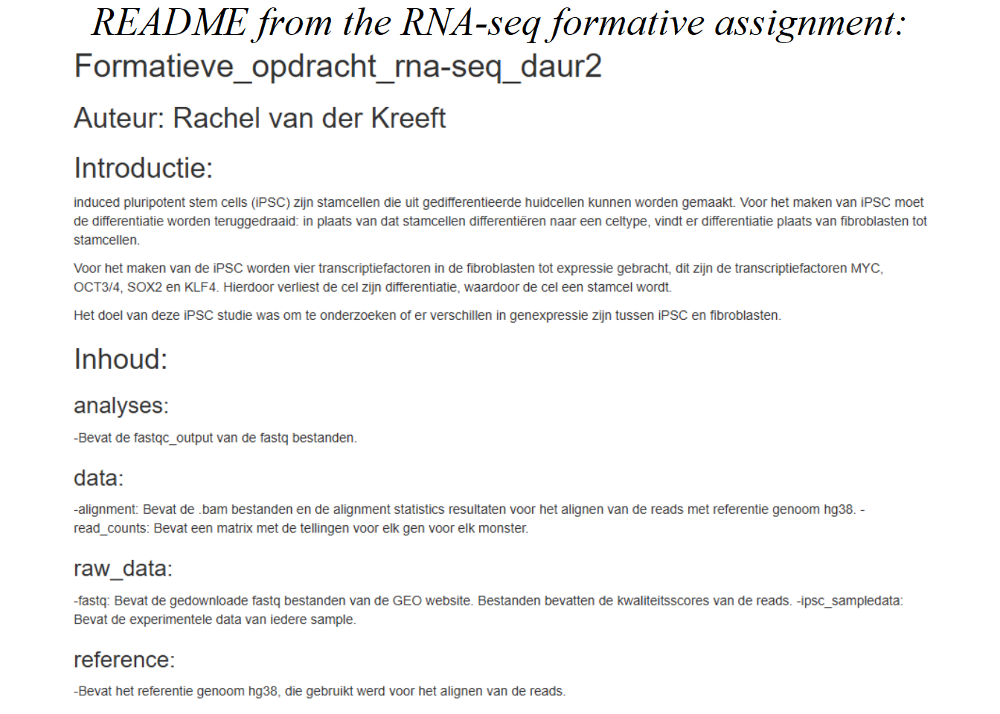

Chapter 5 RNA-sequencing repository
## ~/documents/dsfb2/dsfb2_workflows_portfolio/dsfb2_workflows_portfolio/projecten/3a_formatieve_opdracht_rna-seq_daur2/rnaseq_ipsc
## ├── analyses
## │ └── fastqc
## │ ├── SRR7866687_1.fastq.html
## │ ├── SRR7866687_1.fastq.zip
## │ ├── SRR7866687_2.fastq.html
## │ ├── SRR7866687_2.fastq.zip
## │ ├── SRR7866688_1.fastq.html
## │ ├── SRR7866688_1.fastq.zip
## │ ├── SRR7866688_2.fastq.html
## │ ├── SRR7866688_2.fastq.zip
## │ ├── SRR7866689_1.fastq.html
## │ ├── SRR7866689_1.fastq.zip
## │ ├── SRR7866689_2.fastq.html
## │ ├── SRR7866689_2.fastq.zip
## │ ├── SRR7866690_1.fastq.html
## │ ├── SRR7866690_1.fastq.zip
## │ ├── SRR7866690_2.fastq.html
## │ ├── SRR7866690_2.fastq.zip
## │ ├── SRR7866691_1.fastq.html
## │ ├── SRR7866691_1.fastq.zip
## │ ├── SRR7866691_2.fastq.html
## │ ├── SRR7866691_2.fastq.zip
## │ ├── SRR7866692_1.fastq.html
## │ ├── SRR7866692_1.fastq.zip
## │ ├── SRR7866692_2.fastq.html
## │ ├── SRR7866692_2.fastq.zip
## │ ├── SRR7866693_1.fastq.html
## │ ├── SRR7866693_1.fastq.zip
## │ ├── SRR7866693_2.fastq.html
## │ ├── SRR7866693_2.fastq.zip
## │ ├── SRR7866694_1.fastq.html
## │ ├── SRR7866694_1.fastq.zip
## │ ├── SRR7866694_2.fastq.html
## │ └── SRR7866694_2.fastq.zip
## ├── data
## │ ├── alignment
## │ │ ├── alignment_statistics.rds
## │ │ ├── SRR7866687.bam
## │ │ ├── SRR7866687.bam.indel.vcf
## │ │ ├── SRR7866687.bam.summary
## │ │ ├── SRR7866688.bam
## │ │ ├── SRR7866688.bam.indel.vcf
## │ │ ├── SRR7866688.bam.summary
## │ │ ├── SRR7866689.bam
## │ │ ├── SRR7866689.bam.indel.vcf
## │ │ ├── SRR7866689.bam.summary
## │ │ ├── SRR7866690.bam
## │ │ ├── SRR7866690.bam.indel.vcf
## │ │ ├── SRR7866690.bam.summary
## │ │ ├── SRR7866691.bam
## │ │ ├── SRR7866691.bam.indel.vcf
## │ │ ├── SRR7866691.bam.summary
## │ │ ├── SRR7866692.bam
## │ │ ├── SRR7866692.bam.indel.vcf
## │ │ ├── SRR7866692.bam.summary
## │ │ ├── SRR7866693.bam
## │ │ ├── SRR7866693.bam.indel.vcf
## │ │ ├── SRR7866693.bam.summary
## │ │ ├── SRR7866694.bam
## │ │ ├── SRR7866694.bam.indel.vcf
## │ │ └── SRR7866694.bam.summary
## │ └── counts
## │ └── read_counts.rds
## ├── formatieve_opdracht_iPSC.Rmd
## ├── raw_data
## │ ├── fastq
## │ │ ├── SRR7866687_1.fastq.gz
## │ │ ├── SRR7866687_2.fastq.gz
## │ │ ├── SRR7866688_1.fastq.gz
## │ │ ├── SRR7866688_2.fastq.gz
## │ │ ├── SRR7866689_1.fastq.gz
## │ │ ├── SRR7866689_2.fastq.gz
## │ │ ├── SRR7866690_1.fastq.gz
## │ │ ├── SRR7866690_2.fastq.gz
## │ │ ├── SRR7866691_1.fastq.gz
## │ │ ├── SRR7866691_2.fastq.gz
## │ │ ├── SRR7866692_1.fastq.gz
## │ │ ├── SRR7866692_2.fastq.gz
## │ │ ├── SRR7866693_1.fastq.gz
## │ │ ├── SRR7866693_2.fastq.gz
## │ │ ├── SRR7866694_1.fastq.gz
## │ │ └── SRR7866694_2.fastq.gz
## │ └── ipsc_sampledata
## │ └── ipsc_sampledata.csv
## ├── README.md
## ├── reference
## │ └── hg38_index
## │ ├── hg38_index.00.b.array
## │ ├── hg38_index.00.b.tab
## │ ├── hg38_index.files
## │ ├── hg38_index.log
## │ └── hg38_index.reads
## └── scripts
## ├── aligning_reads.Rmd
## ├── annotation_DE_genes.R
## ├── correlations_heatmap.R
## ├── count_plots.R
## ├── count_table.R
## ├── deseq_object.Rmd
## ├── dge_analysis.R
## ├── fastqc_analysis.sh
## ├── fastq_download.sh
## ├── go_term_enrichment_analysis.R
## ├── heatmap_scaling.R
## ├── normalizing_RNA-seq_count_data.R
## ├── principal_component_analysis.R
## ├── volcano_plots.R
## └── workflow.Rmd